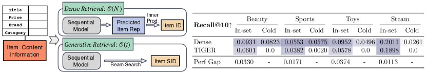
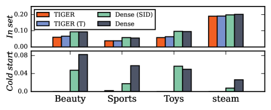
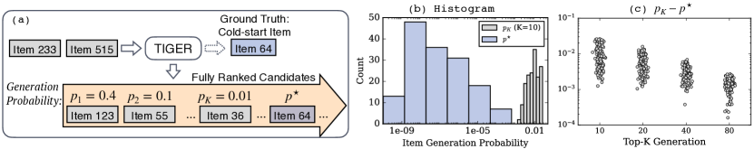
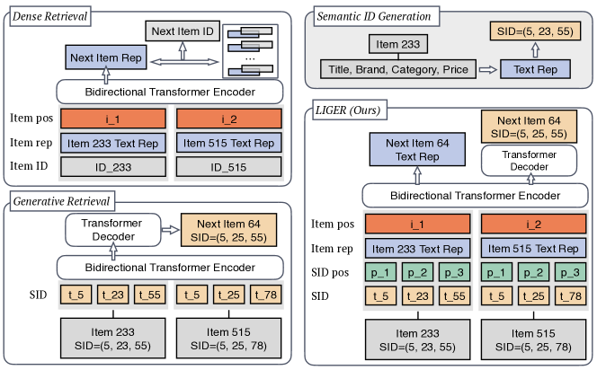
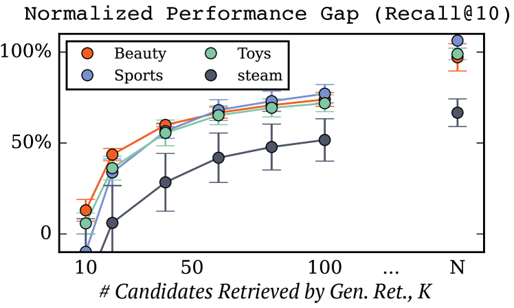
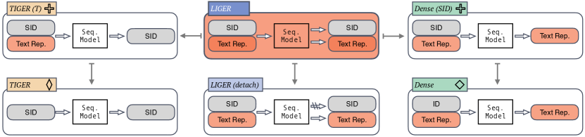
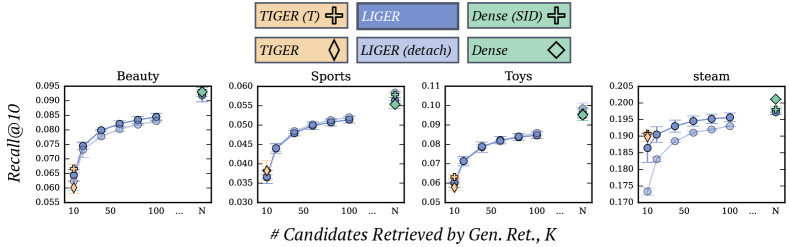

Unifying Generative and Dense Retrieval for Sequential Recommendation
Авторы: Liu Yang, Fabian Paischer, Kaveh Hassani, Jiacheng Li, Shuai Shao, Zhang Gabriel Li, Yun He, Xue Feng, Nima Noorshams, Sem Park, Bo Long, Robert D. Nowak, Xiaoli Gao, Hamid Eghbalzadeh.
Аффилиации: University of Wisconsin-Madison; ELLIS Unit / LIT AI Lab / JKU Linz; Meta AI.
Источник: arXiv:2411.18814v2, 2024.
1. Коротко: о чем статья
Статья сравнивает два retrieval paradigm для sequential recommendation при максимально близких условиях: dense retrieval и generative retrieval на semantic IDs. Dense retrieval кодирует историю пользователя в vector representation и ранжирует items через similarity / inner product с item representations. Generative retrieval, в стиле TIGER, заменяет items на semantic IDs из RQ-VAE и генерирует следующий item как последовательность SID tokens через encoder-decoder Transformer и beam search.
Авторы показывают, что на их академических benchmark'ах dense retrieval стабильно сильнее реализованного generative retrieval, несмотря на то что TIGER дешевле по storage/inference abstraction. Особенно важный результат: TIGER почти не генерирует cold-start items. Генерационная вероятность cold-start targets оказывается ниже beam-search threshold, поэтому такие items просто не попадают в candidate set.
Чтобы закрыть этот разрыв, авторы предлагают LIGER: гибридную модель, которая сохраняет semantic-ID / generative component, но добавляет dense output embedding head и reranking. На inference LIGER сначала генерирует candidates beam search'ем, затем добавляет cold-start item set и ранжирует объединенный candidate pool через dense embedding head. Поэтому LIGER - это не late fusion двух готовых списков, а unified model с двумя heads и двумя objectives.
2. Контекст: GR против dense retrieval
| Аспект | Sequential dense retrieval | Generative retrieval / TIGER | LIGER |
|---|---|---|---|
| Item representation | У каждого item есть dense embedding, который нужно хранить и сравнивать. | Item представлен semantic ID tuple из RQ-VAE codebooks; индивидуальный dense embedding item не нужен на inference. | Input использует SID + text representation; output имеет SID head и dense embedding head. |
| Retrieval | Maximum inner product / cosine similarity по всем item embeddings или ANN. | Beam search по SID tokens. | Beam search дает shortlist; cold-start set добавляется явно; final ranking делает dense head. |
| Сильная сторона | Высокое качество ranking и non-zero cold-start через text representations. | Меньше item-specific storage, потенциально дешевле retrieve и можно генерировать разнообразные candidates. | Пытается получить efficiency GR и качество/cold-start behavior dense retrieval. |
| Проблема | Storage и full-item comparison растут с числом items. | На tested datasets проигрывает dense retrieval и почти не генерирует cold-start items. | Нужен known cold-start set и reranking candidates; это уже не чистый GR. |
3. Постановка эксперимента
Авторы специально выравнивают условия сравнения. Для TIGER они воспроизводят двухстадийный pipeline: сначала item attributes преобразуются в text embeddings через sentence-T5-XXL, затем RQ-VAE строит semantic IDs. После этого Transformer обучается генерировать следующий SID по SID-history. Для dense retrieval берется тот же item text representation, чтобы dense baseline не был unfairly deprived of content information.
Датасеты: Amazon Beauty, Amazon Sports and Outdoors, Amazon Toys and Games, Steam. После 5-core filtering: Beauty 22,363 users / 12,101 items / 198,502 actions / 43 cold-start items; Toys 19,412 / 11,924 / 167,597 / 56; Sports 35,598 / 18,357 / 296,337 / 81; Steam 47,761 / 12,012 / 599,620 / 400.
Sequence length truncate'ится до 20 latest items. Evaluation - leave-one-out: последний item тестовый, предпоследний validation, остальное training. Метрики: NDCG@10 и Recall@10 отдельно для in-set items и cold-start items. Чтобы cold-start evaluation был честнее, cold-start items исключают из RQ-VAE training.
4. Анализ: почему TIGER проигрывает dense retrieval
4.1. Performance gap
В Figure 1 и Figure 3 авторы показывают: реализованный dense retrieval сильнее TIGER на in-set и cold-start splits. Это не формулируется как универсальное доказательство, что dense retrieval всегда лучше GR. Наоборот, авторы прямо ограничивают claim small-scale academic benchmark'ами и признают, что в industrial settings semantic-ID systems могут вести себя иначе.

4.2. SID как representation не главный bottleneck
Чтобы проверить, виноваты ли semantic IDs как item representation, авторы делают dense baseline Dense (SID): dense retrieval получает semantic IDs вместо обычных item IDs, но сохраняет dense objective. Dense (SID) остается близким к Dense. Это говорит, что SID itself может не быть главным источником падения качества.
Другой ablation - TIGER (T): TIGER получает text representation как input. Это дает только marginal improvements и все равно не догоняет dense retrieval. Вывод авторов: основная проблема не только в недостатке textual information, а в next-token generation / beam-search retrieval mechanism.

4.3. Cold-start failure
Самый важный diagnostic: TIGER почти не генерирует cold-start items. Авторы сравнивают generation probability ground-truth cold-start item с минимальной probability item'а, который вошел в beam. Для успешного retrieve ground-truth cold-start probability должна быть выше beam threshold. На практике она ниже, поэтому cold-start item не попадает в output. Это и объясняет нулевые или почти нулевые cold-start Recall@10/NDCG@10 у TIGER.

Авторы также обсуждают workaround из TIGER: заранее задать долю cold-start items в candidate set. Они считают это слабым решением, потому что нужна априорная доля cold-start recommendations, которая в реальном каталоге может быть неизвестна и динамична.
5. Метод LIGER

5.1. Input representation
LIGER строит input для каждого item из semantic ID tokens и item text representation. Для semantic ID \(s_i = (s_{i,1}, ..., s_{i,L})\) используются learnable SID embeddings и positional embeddings. Text representation \(t_i\), полученный sentence-T5-XXL, добавляется к token-level representation. Упрощенно: item представлен не только discrete SID, но и content embedding, который помогает dense head ранжировать candidates и работать с cold-start.
Как получается item representation:
- Собрать textual description item'а. Для item \(i\) берутся key-value attributes \(\{(k_1,v_1), ..., (k_p,v_p)\}\) и форматируются в prompt \(T_i=\mathrm{prompt}(k_1,v_1,\ldots,k_p,v_p)\). Для Amazon это title, price, category, description; для Steam - title, genre, specs, tags, price, publisher.
- Получить text embedding. \(T_i\) кодируется sentence-T5-XXL, получая \(\mathbf{e}^{text}_i \in \mathbb{R}^{768}\). В Transformer этот вектор не подается напрямую: его проецируют Linear layer'ом в 128 dimensions, чтобы совпасть с hidden size модели.
- Получить semantic ID. Text embeddings квантуются RQ-VAE. В setup статьи RQ-VAE использует 3-layer MLP encoder/decoder, три уровня codebooks, dimension 128 и cardinality 256 на каждом уровне. Следуя TIGER, к semantic codes добавляется extra token, чтобы устранить collisions: один и тот же SID tuple не должен указывать на несколько items.
- Собрать token-level input. Для каждого SID token \(s_i^j\) строится embedding как сумма learnable SID embedding, item text representation, item positional embedding и positional embedding внутри SID tuple. То есть каждый token несет одновременно discrete code, content prior и позицию.
Формула из статьи для embedding'а одного semantic-ID token'а:
Здесь \(\mathbf{e}_{s_i^j}\) - learnable embedding конкретного \(j\)-го semantic ID token'а item'а \(i\), \(\mathbf{e}^{text}_i\) - text representation item'а, \(\mathbf{e}^{pos}_i\) - positional embedding item'а в user sequence, а \(\mathbf{e}^{pos}_j\) - positional embedding token'а внутри semantic ID tuple. Финальный embedding item'а - это sequence из таких token embeddings: \(\mathbf{E}_i = [\mathbf{E}_{s_i^1}, \mathbf{E}_{s_i^2}, \ldots, \mathbf{E}_{s_i^m}]\).
Интуитивно LIGER делает SID-token не голым codeword'ом, а "обогащенным" token'ом: если два item имеют похожие SID, dense text component и item-level position помогают encoder'у различать их при ranking objective.
5.2. Как строится training sequence
Исходная user history - последовательность взаимодействий с item IDs. После preprocessing каждый item ID заменяется на semantic ID tuple. Если item \(i_t\) имеет SID \((s^1_{i_t}, s^2_{i_t}, s^3_{i_t}, s^{extra}_{i_t})\), то один user sequence превращается не в один token на item, а в блок SID tokens на каждый item. Модель видит историю последних items; в экспериментах sequence truncate'ится до 20 последних item interactions.
Для LIGER важно, что encoder получает последовательность enriched SID-token embeddings из истории, а targets относятся к следующему item. Это teacher-forcing setup: по history до позиции \(t\) модель должна предсказать representation следующего item \(i_{t+1}\). В leave-one-out split последний item идет в test, предпоследний в validation, остальные позиции используются для training histories.
Отдельный cold-start precaution: cold-start items исключают из RQ-VAE training, чтобы tokenizer не видел их content при построении codebooks. При этом text representation cold-start item'а остается доступным для dense reranking на inference, что и дает LIGER шанс находить unseen items.
5.3. Two-head training
Модель обучается двумя objectives:
- SID generation loss. Decoder генерирует semantic ID следующего item как последовательность tokens, как в TIGER.
- Dense embedding loss. Encoder output должен быть близок к text representation следующего item через cosine similarity / softmax objective.
Итоговый loss объединяет две части. Важная идея: LIGER сохраняет generative retrieval path, но заставляет same sequence model также предсказывать dense item representation. Поэтому final ranking может использовать embedding geometry, а не только token probabilities.
В статье общий objective записан как сумма dense contrastive term и autoregressive SID term:
Здесь \([\mathbf{E}_1,\ldots,\mathbf{E}_n]\) - encoded history user'а до текущего момента, \(\hat{\mathbf{E}}(\Theta)\) - output encoder'а, который играет роль dense query representation, \(\mathbf{e}^{text}_{n+1}\) - text embedding правильного следующего item, \(\mathcal{I}\) - item universe, \(\tau\) - temperature, а \(s^j_{n+1}\) - \(j\)-й token semantic ID следующего item.
- Первый term: dense alignment / retrieval loss. Это softmax по cosine similarity. Он тянет encoder output к text embedding правильного next item и отталкивает от embeddings остальных items в denominator. Именно эта часть отвечает за dense ranking после beam search: на inference она позволяет сравнивать query embedding с item text representations и rerank'ить candidate pool, включая cold-start items.
- Второй term: next-token SID prediction loss. Это сумма cross-entropy по всем \(m\) token'ам semantic ID tuple. Он учит decoder генерировать discrete SID следующего item слева направо, conditioned on user history. Именно эта часть сохраняет generative retrieval behavior: beam search может получить compact shortlist без сравнения со всем каталогом.
- Почему loss просто складывается. Авторы не вводят отдельный коэффициент \(\lambda\) между dense и generative частями в основной формуле: обе компоненты оптимизируют один shared sequence model. Dense term делает hidden representation пригодным для similarity-based ranking, а SID term удерживает модель в TIGER-like generative retrieval setup.
Более операционно, у LIGER есть encoder output \(\mathbf{h}\), который должен лечь рядом с text embedding следующего item, и decoder output, который должен сгенерировать SID следующего item. Dense part обучается softmax-style objective по cosine similarity: target item text representation получает высокий score, остальные item representations в \(\mathcal{I}\) выступают negatives. В appendix для dense loss указаны LayerNorm + Dropout 0.5 над item embedding input и temperature \(\tau=0.07\).
Generation part - обычная cross-entropy over SID tokens: decoder последовательно предсказывает \(s^1_{i_{t+1}}, s^2_{i_{t+1}}, ..., s^m_{i_{t+1}}\), conditioned on encoded history and previous generated SID tokens. Вариант LIGER(detach) из ablation отключает gradient updates от SID head, чтобы проверить, насколько multi-objective signal от decoder помогает общему encoder representation.
Training hyperparameters: generative model - T5 encoder-decoder, 6 layers в encoder и decoder, embedding dimension 128, 6 heads, feed-forward hidden dimension 1024, dropout 0.2. Dense retrieval implementation использует T5 encoder с теми же основными hyperparameters. Optimizer - AdamW, learning rate 0.0003, weight decay 0.035, cosine learning-rate scheduler. RQ-VAE для SID training использует AdamW с learning rate 0.001 и weight decay 0.1.
5.4. Inference algorithm
- По interaction sequence модель запускает generative decoder и beam search, получая top-\(K\) candidate items по SID generation.
- К этим candidates добавляется множество known cold-start items \(C\). Это явный шаг, которого не было в простом TIGER.
- Encoder output \(h\) используется как dense query representation; все candidates из beam + \(C\) ранжируются по similarity с item text representations / dense representations.
- Top items после reranking возвращаются как recommendation list.
Важно: LIGER не берет независимый DR top-\(K\) из full catalog и не смешивает scores двух отдельных retrievers. Dense retrieval здесь применяется к ограниченному candidate pool после generative retrieve и cold-start augmentation.
6. Результаты
6.1. Main table
| Dataset | Model | In-set NDCG@10 | Cold NDCG@10 | In-set Recall@10 | Cold Recall@10 |
|---|---|---|---|---|---|
| Beauty | TIGER | 0.03216 | 0.00000 | 0.06009 | 0.00000 |
| Beauty | LIGER | 0.04020 | 0.03800 | 0.07447 | 0.10082 |
| Sports | TIGER | 0.01989 | 0.00064 | 0.03822 | 0.00195 |
| Sports | LIGER | 0.02430 | 0.02731 | 0.04400 | 0.05848 |
| Toys | TIGER | 0.02949 | 0.00000 | 0.05782 | 0.00000 |
| Toys | LIGER | 0.03756 | 0.05231 | 0.07135 | 0.13063 |
| Steam | TIGER | 0.15034 | 0.00000 | 0.18980 | 0.00000 |
| Steam | LIGER | 0.14951 | 0.00512 | 0.19049 | 0.01466 |
В main table LIGER обычно лучше TIGER и резко лучше на cold-start. Но в in-set Steam NDCG LIGER чуть ниже TIGER при \(K=20\), хотя Recall немного выше. Это полезная деталь: LIGER не всегда доминирует во всех метриках, а в основном закрывает cold-start и performance gap.
6.2. Сравнение с dense baselines
Авторы сравнивают не только с TIGER, но и с SASRec, FDSA, S3-Rec, UniSRec, RecFormer. LIGER обычно best или second-best, рядом с modality/text-based methods вроде RecFormer и UniSRec. Это важно: статья не говорит "LIGER победил всех во всем"; она показывает, что hybrid GR+dense может быть конкурентным, особенно на cold-start, при меньшем candidate comparison cost, чем full dense retrieval.
6.3. Влияние количества GR candidates
Table 4 и Figure 5 показывают, как LIGER меняется при увеличении числа candidates из generative retrieval. Для in-set Recall@10 LIGER плавно приближается к dense retrieval: чем больше beam candidates, тем выше шанс включить правильный item в shortlist. Для cold-start, наоборот, добавление большего числа GR candidates может снизить cold-start share/ranking, потому что cold-start candidates конкурируют с большим in-set pool. Это важный trade-off между in-set quality и cold-start sensitivity.

7. Ablations
Appendix D разбирает компоненты LIGER:

- TIGER. Только SID generation, без text representation input и без dense head.
- TIGER (T). SID generation с item text representation как input, но без dense head; дает небольшое улучшение, но не решает gap.
- Dense (SID). Убирает SID generation head, но оставляет dense retrieval с SID-based input; показывает, что SID tokens сами по себе не обязательно плохие.
- LIGER (detach). Отключает gradient updates от SID head, чтобы проверить роль multi-objective optimization. Обычно близко к LIGER, но на Steam падение заметнее, что авторы связывают с масштабом dataset.
Главный смысл ablation: выигрыш LIGER идет не от одной магической детали, а от совместного использования SID-trajectory, text representation input, dense embedding head и inference-time cold-start augmentation.

8. Что реально доказывает статья
- На small-scale academic benchmark'ах, при выровненных inputs и architecture details, dense retrieval оказался сильнее реализованного TIGER.
- Основной failure mode TIGER в этой постановке - cold-start: model probabilities для unseen items не проходят beam-search threshold.
- Semantic IDs как representation не обязательно являются главной причиной gap: Dense (SID) работает близко к Dense.
- LIGER улучшает TIGER за счет dense head и reranking candidate pool, особенно если явно добавить cold-start items в candidates.
- Results нельзя напрямую переносить на industrial catalogs: авторы сами подчеркивают, что observed differences зависят от dataset size, implementation details и data distribution.
9. Сильные стороны
- Корректирует слишком общий GR hype. Работа показывает, что TIGER-like GR не автоматически лучше dense retrieval, если сравнивать с честным content-aware dense baseline.
- Хорошие diagnostics. Cold-start probability analysis объясняет failure через beam-search threshold, а не просто через "низкий Recall".
- Полезный hybrid design. LIGER практически показывает, как использовать GR как shortlist generator, а dense head как ranker и cold-start bridge.
- Fairness of comparison. Авторы стараются использовать same sentence-T5 text representations и близкие Transformer hyperparameters.
10. Ограничения и риски интерпретации
- Нет production validation. Все результаты offline на Beauty, Sports, Toys, Steam. Нельзя выводить, что LIGER выиграет в большом production catalog.
- Cold-start set должен быть известен. Inference добавляет cold-start items явно; это работает, если их число мало и система умеет поддерживать актуальный set.
- Full dense retrieval cost сравнивается концептуально. Реальное latency зависит от ANN/index implementation; статья честно говорит, что actual inference time зависит от infrastructure.
- TIGER implementation uncertainty. Оригинальный TIGER codebase был недоступен, поэтому авторы воспроизводили и тюнили метод сами. Это делает comparison полезным, но не окончательным.
- Small cold-start counts. В Amazon splits cold-start items десятки, в Steam 400; такие числа не покрывают сложность большого постоянно обновляемого каталога.
- Не late fusion. Если реализовать метод как независимое смешивание GR/DR scores из двух retrieval paths, это будет другой hybrid design, а не LIGER из статьи.
11. Практический вывод для SID/GR исследований
Главный урок: semantic IDs могут быть хорошим compact index, но retrieval quality определяется не только качеством SID tokenizer. Next-token objective и beam-search dynamics могут блокировать unseen/cold items даже тогда, когда semantic representation содержит нужную информацию. Поэтому SID/GR papers нужно оценивать отдельно по in-set и cold-start, смотреть generation probability thresholds и сравнивать с content-aware dense baselines.
LIGER стоит читать как hybrid recipe: использовать semantic ID generation для efficient shortlist, но не отказываться от dense similarity geometry там, где нужны ranking quality и cold-start. Это ближе к двухголовой модели и reranking, чем к чистому "model-as-index" подходу.
12. Первичные источники
- arXiv abstract: https://arxiv.org/abs/2411.18814
- ar5iv HTML: https://ar5iv.labs.arxiv.org/html/2411.18814v2